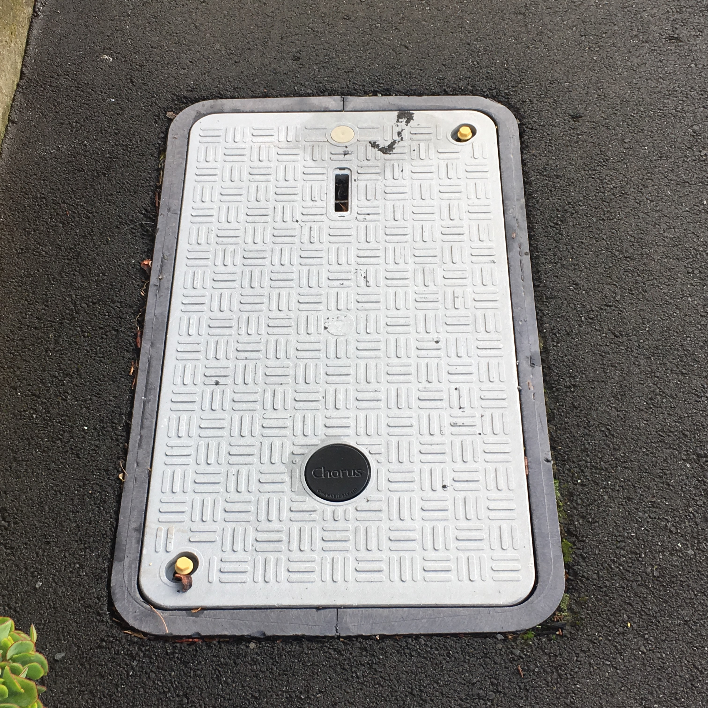

Chorus Manhole
This Chorus manhole allows Chorus employees to specifically access Network Cables which connect the surrounding areas with Internet.
Refer to the Chorus website for more information.
"WW" Manhole
The "WW" Manhole is an access point for Waste Water pipes which connect Surage with nearby Water Treatment Plants.
For more information about the Waste Water Network, refer to the Ministry of Environment website.
Telecom Manhole
This Telecom Manhole is also an access point for Chorus networking. According to Chorus,
they don't change Manholes regularly which explains why there is an obsolete Telecom Cover shown above.
Chorus Manhole
Chorus Manholes have two different sizes depending on their location. Because this access point was located in a suburban street, it means that the infrastructure is small enough to only
require a small access pit.
Refer to the Chorus website for more information.
Cubis Network Manhole
Cubis manholes are an additional part of Wellington's Network Infrastructure.
For information about Cubis, visit their website.